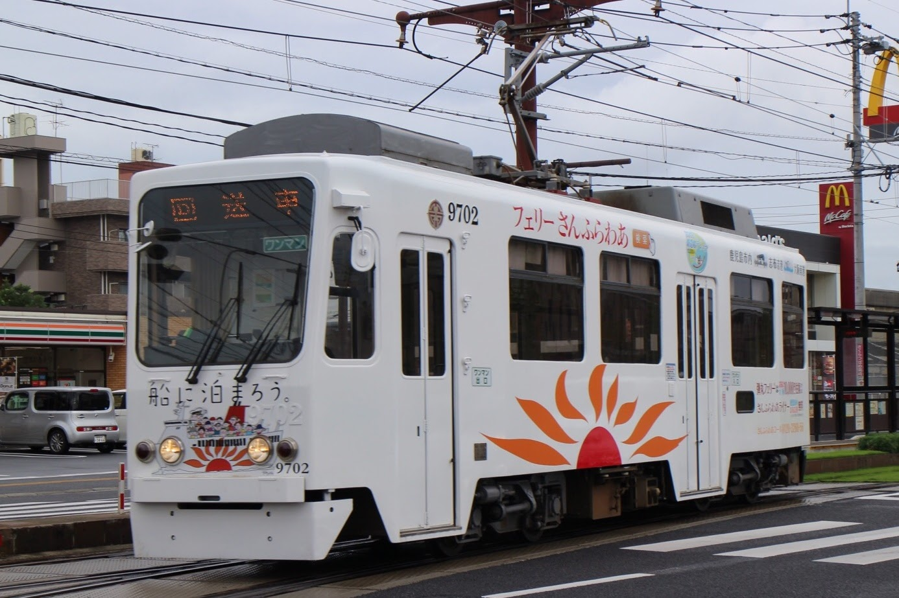

トップページ > 車両紹介
車両紹介

500形
1955年から56年にかけて登場した車両で、鹿児島市電最古参の形式です。新型車両への置き換えが進み、現在は501号の1両のみ運行されています。
{kind=link}
600形
1958年から63年にかけて登場した車両で、500形のマイナーチェンジ版です。現在9両が運行され、そのうち601号は地元の大学生によって企画された白くま黒豚電車「でんでん」として、605号は貸切やイベント向けの「カフェトラム」として運行しています。(写真をクリックするとカフェトラムの画像が表示されます。)

2100形
鹿児島市市制施行100周年と鹿児島市電開業60周年を記念して、1989年に当時のJR九州鹿児島車両所で2両が製造されました。2100形の形式の由来は、「21世紀を先取りする電車」から来ています。

2110・2120・2130・2140形
1991年から94年にかけて登場した車両で、2100形と同じく当時のJR九州鹿児島車両所で製造されました。9両が運行され、一部の車両は、鹿児島市と姉妹都市や友好都市提携を締結した都市のラッピングがされた「都市号」として運行されましたが、2020年12月までに写真のような塗装に変更されました。現在「都市号」は7000形が担当しています。

9500形
1995年から2000年にかけて、旧型車両の台車や機器を利用して車体のみ更新された車両で、15両が運行されています。9513号は、2019年に内外装を改造し「NexTram KIRIKO」として運行され、鹿児島市出身のデザイナーである砂田光紀氏がデザインを担当しています。(写真をクリックすると「NexTram KIRIKO」の画像が表示されます。)

9700形
1998年に2両が登場しました。車体デザインは9500形と同様ですが、こちらは新造された車両です。

1000形(ユートラム)
日本初の国産超低床電車として2001年から05年にかけて9両が登場しました。以降、市電の超低床電車には「ユートラム」という愛称が用いられています。2003年には、鉄道友の会からローレル賞を受賞しました。3次車(1017~1019号)では入口のドアの位置が異なります。(写真をクリックすると3次車の画像が表示されます。)

7000形(ユートラムⅡ)
2007年から08年にかけて登場した超低床電車で、4両が運行されています。車体長は18ｍ、定員は78人と鹿児島市電の現行車両の中では最大です。2020年12月より、7004号を皮切りに「都市号」のラッピングに順次変更されています。(写真をクリックすると「都市号」ラッピングの編成の画像が表示されます。)
{kind=link}
7500形(ユートラムⅢ)
2017年から19年にかけて登場した超低床電車で、4両が運行されています。車体長はユートラムと同じですが、定員は増加しています。2018年には、鉄道友の会からローレル賞を受賞しました。(写真をクリックすると営業運転開始前に行われた研修運転時の写真が表示されます。)

100形(かごでん)
鹿児島市電開業100周年を記念して、2012年に600形616号の機器を使用し、車体のみを新造した更新車両で、101号の1両のみ運行されています。車体のデザインは昭和30年頃まで運行された車両をモチーフにしたものです。主に土日祝日に運行される観光レトロ電車「かごでん」として運行されています。

花電車(花2号)
1978年に西鉄から譲り受けた車両です。毎年11月2・3日に開催されるおはら祭では会場内に展示されます。2020年のおはら祭をもって引退しました。後継は2019年に営業運転から引退した500形504号が改造される予定です。
{kind=link}
芝刈り電車
緑化軌道の維持管理を行うために2010年に登場しました。散水電車とその後ろに連結されている芝刈装置を搭載した車両で構成され、主に深夜帯に稼働しています。散水電車は500形512号を改造して製作されました。(写真をクリックすると芝刈装置を搭載した車両の画像が表示されます。)